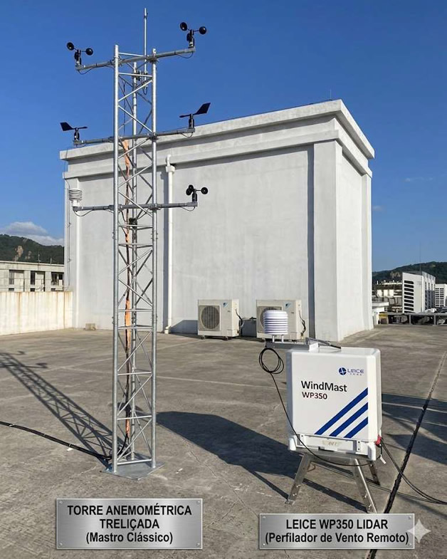

Leice WP350 LIDAR
Perfilador de vento remoto.
VANTAGENS LIDAR LEICE WP350:
- CAPEX equivalente torre convencional. OPEX muito inferior
- Segurança absoluta quando comparado com os altíssimos riscos de trabalho em altura
- Precisão < 0.1m/s
- Disponibilidade dados> 95%
- Perfilamento de 20 janelas medição entre 30 e 350m de altura
- Garantia 3 anos. Manutenção no Brasil
- Equipamento aceito pela EPE em substituição torres AMA de acordo com NT EPE-DEE-RE-057/2016-R4 (instruções para medições meteorológicas em parques eólicos)
- Certificada pela DNV atendendo IEC IEC 61400-12-1:2017
- Correlação > 99% com dados de anemômetro de concha
- Sem manutenção - não existe desgate mecânico
- Baixo consumo de energia – alimentação por Power Box Solarterra S100
- Comunicação por 4G, Ethernet ou Satélite
- Permite realocação para campanhas de vento em vários sites dentro do perímetro de estudo
- Permite utilização em terrenos complexos e análise de turbulência
- Fornecida com relatório Golden Lidar e teste de validação no Brasil
